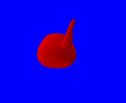

The camera and summary of the vertex processing stages
With the current code, you can move, rotate or rescale the teapot by adjusting the content of
matrix.
But in a real game, you need to organize things differently. Objects are inside a scene and viewed from a camera. You can't just modify each object's characteristic by thinking about how it will be viewed on the screen. You need a better organization.
In a real game engine, computing the position of a vertex (from the position attribute to
gl_Position) is usually done in three steps:
Turning the coordinates relative to the model's center (the
positionattribute) into coordinates relative to the scene (where coordinates(0, 0)are common to all objects of the scene). This uses the object's position, rotation and scale.Turning the coordinates relative to the scene into coordinates relative to the camera's position and rotation. This uses what is called a view matrix (we will see this below).
Turning the coordinates relative to the camera into coordinates relative to the screen, with the perspective matrix.
Note: This gets a bit more complex when dealing with animated models.
Consequently you have three matrices:
- The model matrix, built using the object's position, rotation and scale in the scene.
- The view matrix, built with the camera's position and rotation in the scene.
- The perspective matrix, built with the field of view and aspect ratio of the screen.
The first two matrices are sometimes combined into one modelview matrix before being uploaded to your shaders. But for the sake of simplicity, we are going to use two matrices.
The view matrix
Just like the perspective matrix, here is the view matrix:
fn view_matrix(position: &[f32; 3], direction: &[f32; 3], up: &[f32; 3]) -> [[f32; 4]; 4] {
let f = {
let f = direction;
let len = f[0] * f[0] + f[1] * f[1] + f[2] * f[2];
let len = len.sqrt();
[f[0] / len, f[1] / len, f[2] / len]
};
let s = [up[1] * f[2] - up[2] * f[1],
up[2] * f[0] - up[0] * f[2],
up[0] * f[1] - up[1] * f[0]];
let s_norm = {
let len = s[0] * s[0] + s[1] * s[1] + s[2] * s[2];
let len = len.sqrt();
[s[0] / len, s[1] / len, s[2] / len]
};
let u = [f[1] * s_norm[2] - f[2] * s_norm[1],
f[2] * s_norm[0] - f[0] * s_norm[2],
f[0] * s_norm[1] - f[1] * s_norm[0]];
let p = [-position[0] * s_norm[0] - position[1] * s_norm[1] - position[2] * s_norm[2],
-position[0] * u[0] - position[1] * u[1] - position[2] * u[2],
-position[0] * f[0] - position[1] * f[1] - position[2] * f[2]];
[
[s_norm[0], u[0], f[0], 0.0],
[s_norm[1], u[1], f[1], 0.0],
[s_norm[2], u[2], f[2], 0.0],
[p[0], p[1], p[2], 1.0],
]
}
The function takes three arguments:
- The
positionof the camera in the scene. - The
directionthe camera is facing in scene coordinates. - The
upvector, representing the direction in scene coordinates of the top of the screen.
We need to reorganize our vertex shader one more time:
#version 140
in vec3 position;
in vec3 normal;
out vec3 v_normal;
uniform mat4 perspective;
uniform mat4 view;
uniform mat4 model;
void main() {
mat4 modelview = view * model;
v_normal = transpose(inverse(mat3(modelview))) * normal;
gl_Position = perspective * modelview * vec4(position, 1.0);
}
Remember that the order of multiplications is the inverse of the order in which the transformations must be applied. The matrix to apply first is the nearest to the input.
As usual, we need to pass a new uniform:
let view = view_matrix(&[2.0, -1.0, 1.0], &[-2.0, 1.0, 1.0], &[0.0, 1.0, 0.0]);
target.draw((&positions, &normals), &indices, &program,
&uniform! { model: model, view: view, perspective: perspective, u_light: light },
¶ms).unwrap();
We are using fixed coordinates for the example. A first person camera is not that easy to create and requires a lot of code that would be out of scope.
And here is the result:
